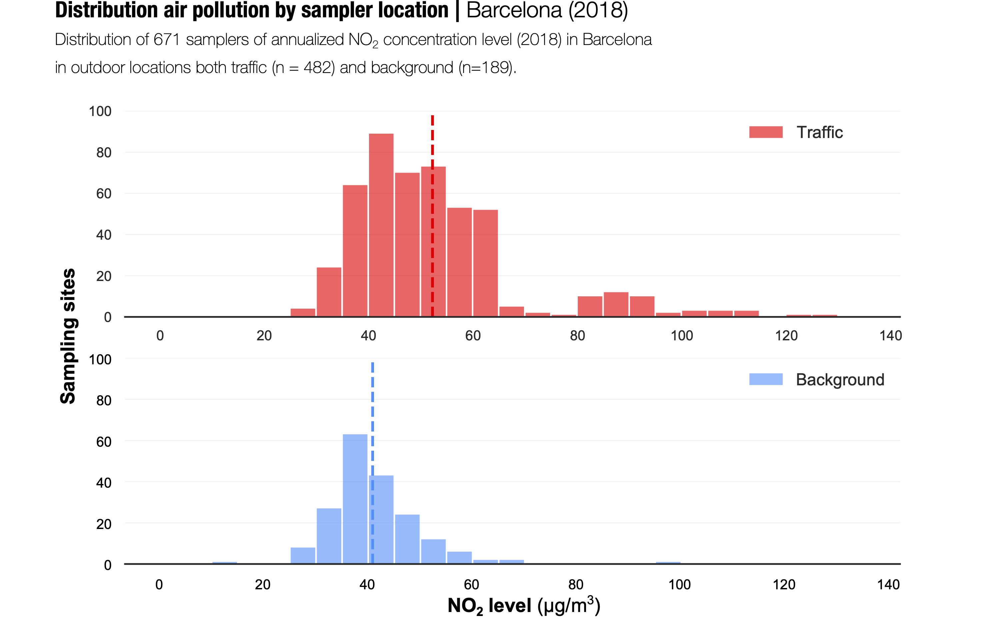
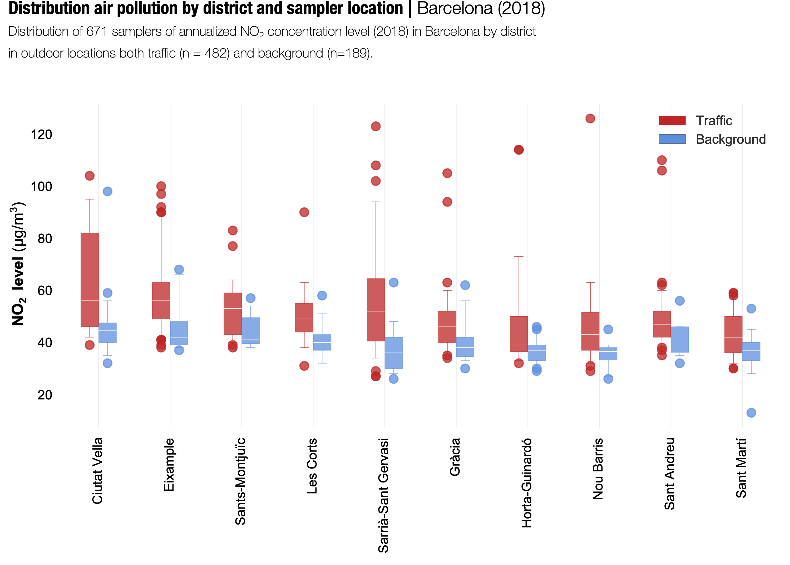

Article de recerca
«Large-scale citizen science provides high-resolution nitrogen dioxide values and health impact while enhancing community knowledge and collective action»
Aquest article ha estat publicat a Science of The Total Environment
com a resultat del projecte «xAire», una iniciativa de ciència ciutadana pop-up dins de The City Station en el marc de l'exposició «After the end of the world» al Centre de Cultura
Contemporània de Barcelona. En el projecte xAire hi van participar més de 1.650 persones, 10 investigadors científics professionals, prop de 36 mestres, 4 organitzacions no científiques i
famílies i alumnes de 18 escoles públiques de primària distribuïdes entre els 10 districtes de la ciutat de Barcelona.
A continuació, algunes imatges que resumeixen la recerca col·lectiva i participativa
centrada en la mesura dels nivells de NO2 a Barcelona durant el 2018.
Mapa amb totes les ubicacions exteriors de mostrejadors (n = 671) amb codi de color segons els seus nivells de concentració anualitzada de NO2. © Julián Vicens

Distribució dels nivells de NO2 segons la ubicació del mostrejador: fons (a 100 m de carrers amb vehicles motoritzats) i trànsit. © Julián Vicens
